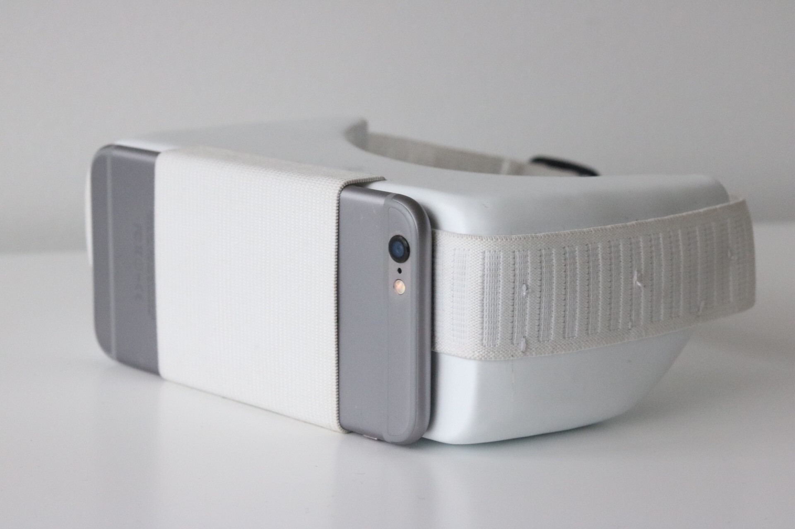

Virtual
Reality
Medset
_
2017
SUMMARY
The Virtual Reality Medset is designed for practicing medical students with purpose to simulate medical operations to allow students to practice in a virtual environment. The Medset is a high performing alternative compared to practice dummies, as it provides an interactive simulation of surgical procedures, also aiming to minimize the expenses on medical equipment for practice.
View Final PosterBRIEF
This project was done in the course called, Materials in Design. To explore the discipline of product design, we were assigned two kinds of materials that were randomly drawn, to incorporate within the design of a virtual reality headset.
I had the opportunity to focus on ideation, prototyping, and the overall development of our final product.
RESEARCH
We were assigned the materials of plastic and fabric, in which we began researching by exploring different industries and ways we could utilize their physical and aesthetic qualities. Our inspiration for the VR headset sprouted from the design constraint of hygiene and disinfection. This lead to brainstorming occupations of where strict hygiene policies were enforced. Hospitals were our ideal are of design because of the clean-white aesthetic it conveys.
PROTOTYPING: The Mould
With our lack of experience working with plastic, we faced various prototyping challenges. Many groups that were assigned plastic planned to 3D print their exterior, although Aaron suggested we use process of vacuum forming to achieve a unique, smooth, and professional finish. Agreeing to strategically challenge ourselves, Aaron and I began to create our first mould utilizing polystyrene as it allowed us to easily apply adjustments.
PROTOTYPING: The Exterior
We took an unconventional approach while creating the exterior of the headset, which lead to many issues as we proceeded on with our process. As the first group to utilize vacuum forming, we had to improvise and investigate different strategies to successfully create our mold.
Using styrene as our main exterior, we attempted to place our foam model directly in chamber of the vacuum former without out any prior preparation, which resulted in melted areas around our form. Additional problems that arose: The plastic became too brittle due to the excessive stretching, the form was bulkier than we anticipated, and the mold could not be taken out without breaking the form.
PROTOTYPING: Attempt #2
Continuing to research on the process of vacuum forming, we decided to coat our foam mold with drywall sealer to protect the foams form from the high temperature of the vacuum former.
REDESIGN
After successfully molding our styrene exterior, I designed a center plain to hold the lens while also acted as additional support, countering the brittleness of our exterior. This eventually lead to the redesign of our method of placement for the phone, in which we utilized the tension of our fabric band to create a front loaded sleeve to slim our device, which is the method I introduced during our sketching stages.
REFLECTION
Though taking an unorthodox approach lead to many challenges throughout the process, we were able to successfully complete the project. Through observations, adaptiveness and persistence, we were able to design a sleek yet durable virtual reality headset, suitable for practicing medical students and overcoming the large number of problems we had encountered.
